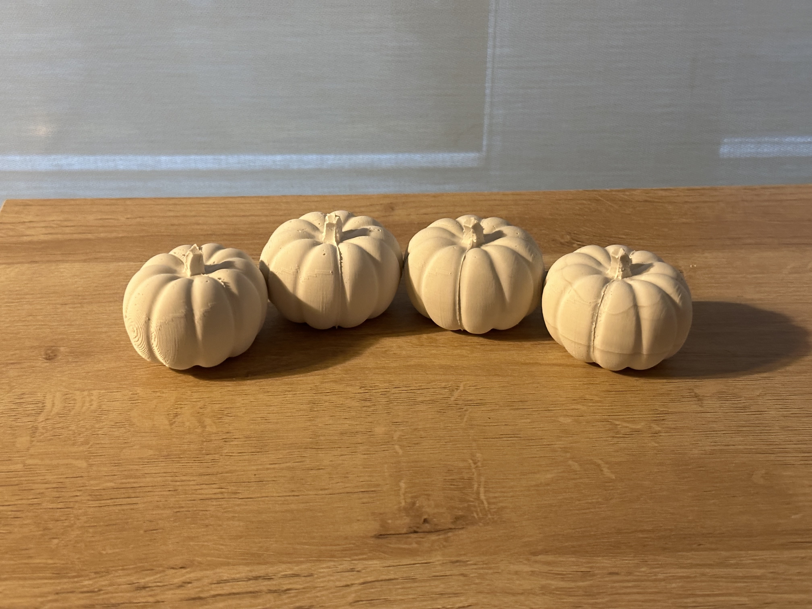
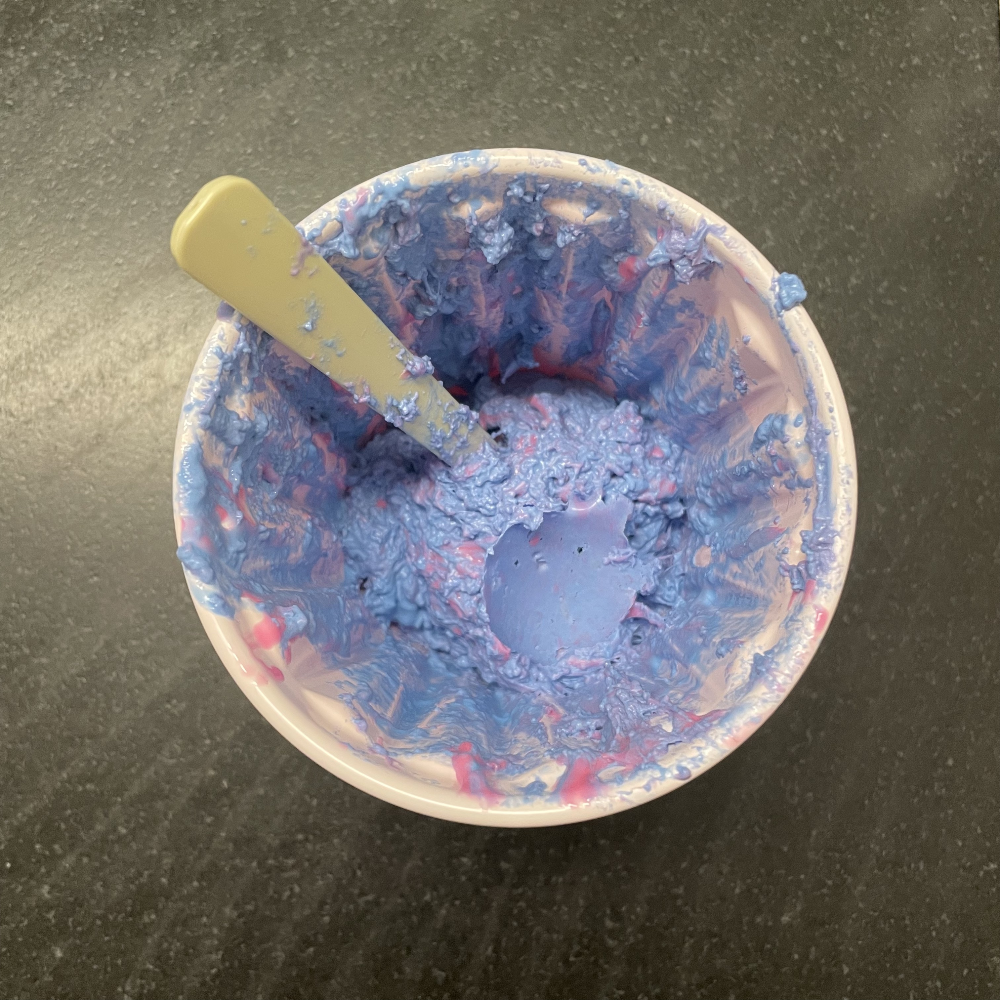

A6: Molding & Casting Pt. 2
By Priyana Patel 
Designing the Casting Mold
Last week, I was playing around in Rhino trying to understand the basics of how to design my casting mold with a simple sphere. After learning how to connect and join the surfaces of my bounding box, I decided to experiment with a new shape. I downloaded a pumpkin from Thingiverse by Tony Short (https://www.thingiverse.com/thing:1836056). Thankfully, the object was already split in two. To design my final mold, I first created a 10 mm base, added the pumpkin half in the center, created another non-solid rectangle on top of the mold (note: this rectangle is smaller than the base), extruded the rectangle, offset the surface by 10 mm, and then added 4, 20 mm truncated cones starting at the base of the mold. For the adjoining half, I trimmed the truncated cones in half and placed them at the surface of the base. I used BooleanUnion to make sunken holes and extended the base by 10 mm to create extra space beneath the holes. I also used a truncated cone and added it at the bottom of the pumpkin between the center of the base surface. Once my molds were good to go, I sliced in Cura using the lowest setting and 5% infill, and sent them to my printer.
Creating the Mold with Oomoo
Unfortunately when I opened up my bottle of the Part A pink silicone, it was extremely thick and would barely come out of the bottle. I did try to go ahead and mix it with Part B, however I realized that it was way too thick and I wouldn’t be able to use it. I went ahead and ordered another kit of Oomoo 30 which would thankfully arrive the next day.  My next batch of Oomoo mix was much better and so I poured out equal parts of Part A and B, mixed together, and poured into my casting molds. I let them sit for 6 hours, pried them out, and I was ready to go.
Casting Hydrostone
I picked up my hydrostone from the mill and mixed it with water to create my mix. I had a slightly runny consistency which was easier for pouring. After waiting approximately 30 minutes for my pumpkins to set, I was horrified to find out that I used the same half for each of my molds, meaning my stem did not align correctly.Round 2
I redid my mold in Rhino, making sure to the correct half this time. Once they were good to go and aligned correctly this time, I sliced in Cura using the same settings, and sent it to the printer. My molds took about 12 hours to print each time. I ended up reprinting both halves of my molds because I had scaled the pumpkin half using Scale2D instead of Scale, making it extremely difficult to make both proportionate. I also ended up scaling my molds by 75% in Cura to make sure both halves fit on the build plate. After printing my new molds, I created my Oomoo mix and let them sit overnight. This made them a bit tougher to get out but slowly but surely and with a little bit of force, I got them out. This time because I was in a rush, I didn’t mix my Oomoo as well so there were patches of blue in my final mold, however this did not affect the shape or the setting. Because I used up my hydrostone when experimenting with my first set of pumpkins, I picked up some Perfect Cast from the class materials list. I experimented with different consistencies and again found that the more runny mix was easier to pour and didn’t get stuck in the mold. After several days, and some mess later, I finally have my pumpkins just in time to make the perfect Thanksgiving table decorations.
After several days, and some mess later, I finally have my pumpkins just in time to make the perfect Thanksgiving table decorations.